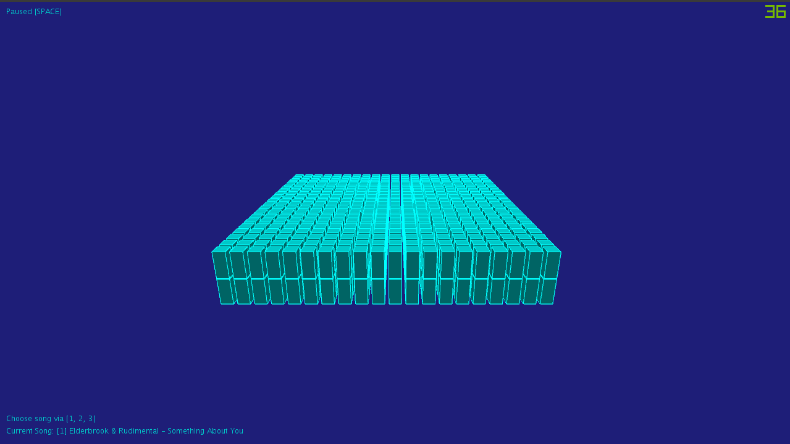

Lewis Brooks Hi, I'm Lewis Brooks, I have begun my undergraduate degree in Computer Science, for the first 2 weeks we have practiced java. Despite programming for a few years before on python, java is an entirely different language and allows for much more freedom in terms of coding, UI, and processing.
Currently I am in the RAF Air Cadets, and I'm interested in graphic design and cyber security and hope to enter the industry once I've got my degree.
I have previously worked on a Battleships Game in python for A Level Computer Science and have worked with programming language such as html, css and python on and off for 5 years
|
||
|
|
||
Bootcamp 2020: AudioCube
My first programming project, concluding the 2 week Programming Bootcamp at
City, University of London. This Processing project demonstrates a comprehensive understanding
of the use of variables, loops, 3d graphics, transforming, rotation as well as sound processing. I created a 3D box using nested for loops, and using the Sound library from Processing was able to input songs and analyze them using Fast Fourier Transform (FFT) analyzer and outputting the results to
alter the depth of the shapes. User can also interact with the program using the keyboard via [SPACE] for pausing and playing, and Number Keys, [1, 2, 3] to choose which song to play and visualise.
Check out the full code on Github: AudioCube Project | ||
|  | ||